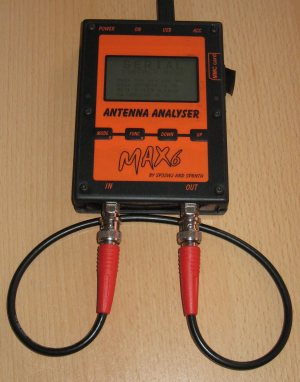
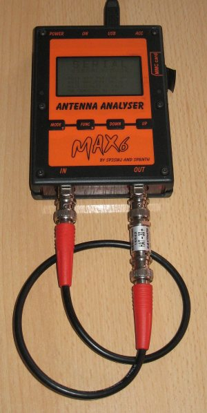

Seleccione la frecuencia de calibracion en el campo Cal. freq.
Conectar un osciloscopio junto con un terminador de 50 Ohm al conector DUT. Asegúrese de conectar el conector en T al osciloscopio para obtener lecturas correctas.

La imagen en el osciloscopio debería ser como esta:

Introduzca la medida de voltaje Uss en el campo Medida Uss:
Introduzca la atenuación del la red deseada en el campo Cal.Atenuador:
Conecte un cable entre el conector DUT y el conector DET

Presione el Botón de bucle
Conecte la red de atenuación junto al bucle de cable entre los conectores DUT y DET.

Presione el Botón atenuador.
Ahora el Botón OK está activo y los nuevos valores de calibración son mostrados en Campos calibrados
Presione el Botón OK para usar los nuevos valores de calibración y cerrar el diálogo.
Presione el Botón Cancelar para guardar los valores de la calibración inicial y ecrrar el diálogo.